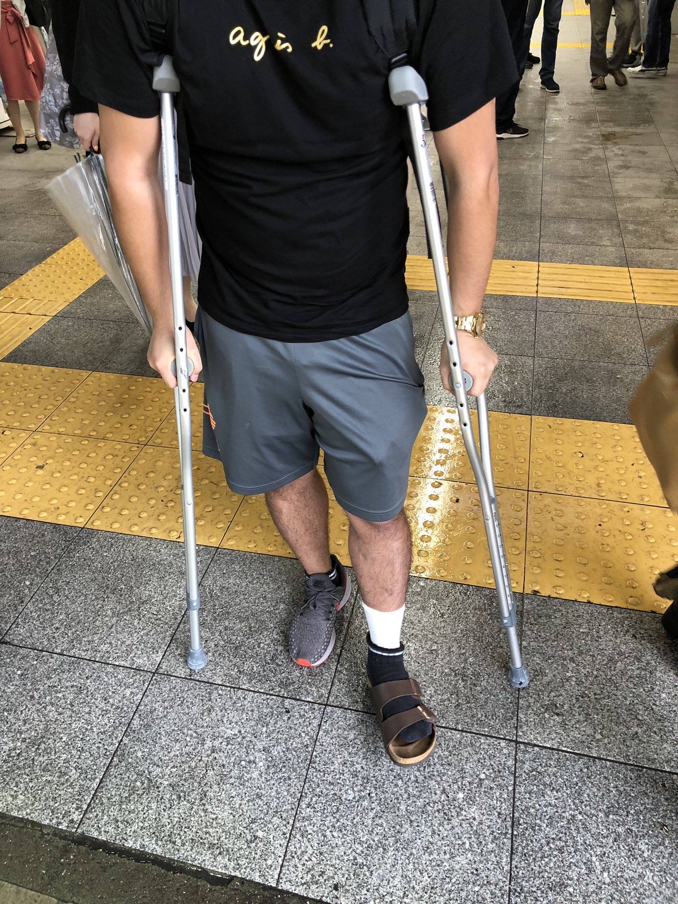
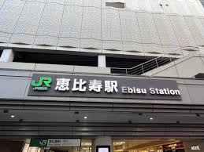
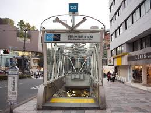
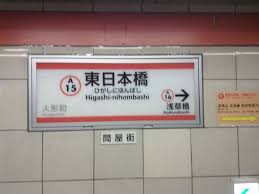

藤原の職務経歴書
ざっくりこんなことしてました！
コンテンツSEOやオウンドメディアを中心に5年半ほどやっておりました。
検索キーワードの選定から記事の作成まで、ざっくりいうとググったら上の方に出てたくさん見られるようにするお仕事をしてました。
大きく個人運営編と会社員編に分けてお送りいたします。
個人運営編
WEBを始めたきっかけとして野球ゲームをやっていて、大学の先輩何人かとゲームの更新が来るたびに私が進め方を教えるラインがあり、
先輩の1人が「プロスピで給料もらいてぇ」とおっしゃっていたので、
「とりあえずYouTubeとかやってみたらどうですか？」と提案すると、
「いや、最近WEBサイトの制作会社に転職したから自分でもサイトやろうと思うんだけどどう？」と言われたので、やってみるかということになりました。
ゲーム攻略サイト運営:2019年4月〜

役割分担しつつ、体制が徐々にできていく黎明期の楽しさは今でも良い経験です。
6月に初台の駅で初めてGoogleアドセンスの収益1円を確認した時の喜びは別格でした。
サイトが急成長中に骨折

同年9月にテニスの大会に出たところ、
足の骨を5本骨折というテニプリでしか聞かない現象が起きました。
そのおかげ？か手術後に足の調子が安定してくると共に、少しずつパソコンで記事が書けるようになり量産できました。
パターンを掴んで大ハネ、業界トップ争いへ
松葉杖で歩けるようになる頃、試行錯誤してきた中で最高のフォーマットが固まりました。だいたい検索1位を取れるようになり、イベントの日には1日で4万円以上入ってくることもありました。
やはり軌道に乗るとテンションも乗ってくるもので、結果を出す以外にモチベを保つのってなかなか難しいなということに気づきました。
コロナ襲来でさらに伸びる
コロナの初期は家でゲームしてろとかいう風潮があり追い風でした！
色んなプロの選手も参入してきたり、ゲーム人口の増加もあり合わせてサイトもめちゃくちゃ伸びました。
MAXで月に127万PVほどを記録した頃、あいつがやってくるのです。
2020年5月:Googleコアアルゴリズムアップデート
コロナが始まって初めての大型アップデートです。
この時の特徴が発信元のドメインパワー重視になり、コンテンツのクオリティでは勝てなくなりました。
わかりやすくいうと何を言っているかより誰が言ってるか、みたいな感じ。
相方脱退＆売却＆就活を決意
そして相方が引退し、私も運営との両立のために時短で働いていましたが、逆に自分が法人サイドに回ればいいということでそれまでの経験を活かし就活しました。
某恵比寿の大手上場デジマ会社に就職:2020年12月〜
使ったことのないツールや知識を教えていただき、会社で取り組むということがいかに強いことなのかということを実感させられました。
3ヶ月の契約社員だったのでそこで終わりでしたが、学ぶことはとても多い日々でした。
某明治神宮前のオウンドメディア運営会社に就職:2021年6月〜
サイトのM&Aも考えていたところ、サイト買い取り兼中の人として入社というオファーをいただき就職いたしました。
今までは自分でなんでもやっていたものの、ディレクション側で自分が手を動かさない仕組みを作ることに最初は違和感でした。
そこでカイジの「世の中には利用する側とされる側、この2種類しかいないんだ」という言葉を実感します。
初めてのチームビルディング
前任者が突然いなくなったので、突然任されたサイトで初めてのチームビルディングを経験。
ライターなどのワーカー採用、育成、アサイン等々サイト運営を回していくためのチーム作りをすることでプレイヤーから徐々にビジネス視点に切り替わっていきました。
詰められすぎて適応障害にかかり、3年間運営したサイトとおさらば
詰められすぎるのが無理ってなり、手順書を作成し退職。
自分でサイトを立ち上げてから3年間で約1650万PV、ここでスパッと終わりしばらく療養しました。
前職である東日本橋のECがメインの会社に就職:2022年10月〜
療養後は前職にあたる、ECがメインの会社にマイノリティのSEOポジションで入社しました。
SEOは2人体制だったのですが、入ってすぐに部長が辞め、空気的にはフリーランスがポツンと居座ってるような1人部署体制がスタートしました。
日本時間9時半からドバイ時間の18時半が定時と化す
ボロボロの既存案件を立て直し、新規も取ってきたことで結果は出した自負があるもののシンプルにキャパに限界を迎えました。
部署の部訓を「誠意は言葉ではなく金額」から「健康で文化的な最低限度の生活」に変更。
定時の日本時間9時半に出勤し、当時社長がいたドバイ時間の18時半(日本時間23時半)に退勤することが多くなりました。
部下の育成
採用に時間はかかったものの2人メンバーが加入し、教えることで自身のアウトプットにもつながりました。
自身が壁に当たるたびに自分で乗り越えてきたので、どこでどうつまずきそうか、あの時の自分がこういう教え方をされたかったと思ったことを実施。
教えたことを実践できるようになった時はまた別の嬉しさがありました。
就活を考え始め、いったん業務委託へ
1年ほど前に就活を検討し始め、途中でご縁のあった池袋のSEO会社さんから業務委託を受けていたので、2年勤めて前職を9月末に退職。
そこから年末まで池袋で業務委託をし、そして年末にご縁をいただきました。
SEO業界に居続けるか悩んだ結果ポジショントークが課題でセルミュラーへ転職
就活においては、SEOの会社もそうではない会社も両方受けており絶対SEOというこだわりはありませんでした、
元々先方の課題解決のために他の選択肢もある中で、どうしてもSEOのポジショントークをせざるを得ないことに課題感は感じていました。
スキルセットを活かすなら当然SEO関連の業務が最優先ですが、他の選択肢も考えていました。
入社を決めた理由その1：キャリアチェンジの機会をご提案いただいたから
SEO以外の業務で中途で入るのは難しいと思っていましたが、面接の際に吉田さんからキャリアチェンジの提案として、
今の藤原に必要なこととしてデータマーケをご提案いただき、自分次第で出来ることの幅が増えそうだなと思いました。
入社を決めた理由その2：内定までのスピード感
初回の面談から内定までのスピード感が早く、また小野寺さんのファシリと対応が良かったからです。
最初に面談してから入社日確定まで2週間と、素早く丁寧にご対応いただき、とても魅力に感じました。
イマココ→今後の目標

2024年は環境変化が多く、思った以上にやろうと思っていたことが出来ていなかった気がします。
直近今年中は成長のためにもっぱら動ければと考えております。
会社軸：ポジショントークをしない手も口も動かせる総合型マーケターに
今まではSEOという縦軸をずっと掘ってきたので、横軸を広げるために様々な分野の知識をつけていきたいです。
まずは研修を通して土台を作り、早めに実務で貢献できるようになれればと思います。あとはせっかくなのでたくさんの本を読みたいです。
個人軸：海外コンテンツを発信するプラットフォームの育成
最終的な目標である、海外コンテンツを日本に広めるためのプラットフォームの育成に注力したいです。
様々な国へ行き、経験したことはどこかの誰かの役に立つ内容だと思っていて、そんな情報コンテンツを届けられるよう頑張りたいです。
TOPに戻る